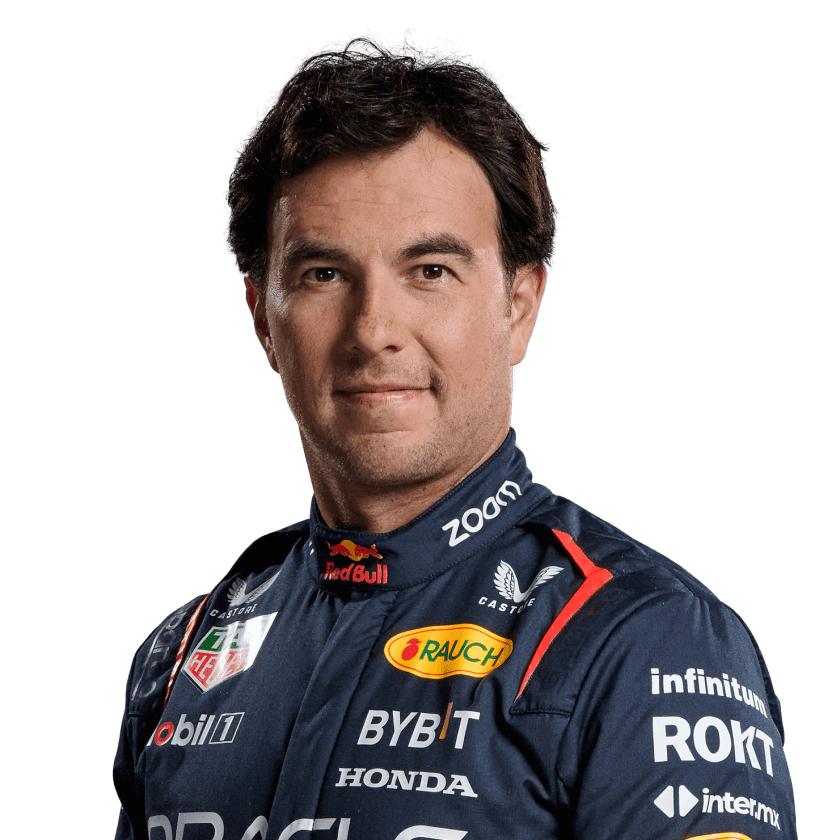

Red Bull
"Gives You Wings"
Red Bull Racing fue fundado en 2005 tras la adquisición del equipo Jaguar Racing por parte de Red Bull GmbH. Desde su debut en la temporada de 2005, el equipo ha logrado un gran éxito en la Fórmula 1, ganando múltiples campeonatos mundiales de pilotos y constructores. Su periodo más exitoso fue entre 2010 y 2013, donde ganaron cuatro títulos consecutivos de constructores y pilotos, gracias a la habilidad del piloto Sebastian Vettel. Red Bull Racing es conocido por su enfoque innovador en el diseño de coches y por su mentalidad competitiva, así como por su estrecha relación con la marca de bebidas energéticas Red Bull.

Christian Horner
Christian Horner es el director del equipo de Fórmula 1 Red Bull Racing. Ha sido una figura clave en el éxito del equipo desde que asumió el cargo en 2005, llevando a Red Bull a múltiples campeonatos de constructores y de pilotos. Horner es conocido por su enfoque estratégico y su habilidad para gestionar a pilotos y recursos dentro del equipo. Su carrera en la Fórmula 1 ha estado marcada por su visión y liderazgo, y ha jugado un papel crucial en la evolución de Red Bull como uno de los equipos más dominantes en la historia reciente de la F1.
Hannah Schmitz
Hannah Schmitz es la estratega principal del equipo Red Bull Racing en la Fórmula 1. Es conocida por su papel en la planificación y ejecución de estrategias durante las carreras, donde toma decisiones críticas que pueden afectar el rendimiento del equipo en tiempo real. Schmitz se unió a Red Bull Racing en 2018 y ha sido fundamental en el éxito del equipo, especialmente durante la era de los recientes campeonatos ganados por Max Verstappen. Su enfoque analítico y su habilidad para trabajar bajo presión la han convertido en una figura clave en el garaje de Red Bull. Además, es una de las pocas mujeres en posiciones de liderazgo en la Fórmula 1, lo que ha contribuido a su reconocimiento dentro del deporte.
Monoplazasas
Red Bull RB20 (2024)
El Red Bull RB20 fue presentado antes de la temporada 2024, incorporando un diseño más agresivo con un nuevo alerón delantero, un sistema de refrigeración actualizado y una suspensión revisada. A pesar de enfrentar algunos desafíos de rendimiento, especialmente con el subviraje, el coche ha conseguido varias victorias en carrera y es pilotado por Max Verstappen y Sergio Pérez
Mas info.
Red Bull RB19 (2023)
El RB19 marcó una temporada histórica para Red Bull, ganando 21 de las 22 carreras, lo que llevó a Max Verstappen a su tercer campeonato consecutivo. Su avanzada aerodinámica y gestión de neumáticos fueron claves para su dominio durante todo el año, consolidando a Red Bull en la cima del campeonato de constructores
Mas info.Red Bull RB18 (2022)
El RB18 fue fundamental para el segundo título de Verstappen, mostrando avances aerodinámicos significativos que mejoraron la carga aerodinámica y el manejo. Consistentemente tuvo un buen rendimiento en diferentes circuitos, estableciendo una base para el éxito continuo de Red Bull en las temporadas siguientes
Mas info.Red Bull RB16B (2021)
Una evolución del RB16, el RB16B vio mejoras en aerodinámica para cumplir con las nuevas regulaciones. Se desempeñó de manera competitiva durante la temporada, logrando múltiples podios y contribuyendo valiosos puntos a la clasificación del equipo a pesar de la fuerte competencia de Mercedes
Mas info.Red Bull RB16 (2020)
Este modelo fue crítico para la victoria de Verstappen en el campeonato, presentando un potente motor Honda y una aerodinámica refinada que proporcionaron un excelente equilibrio entre velocidad y capacidad de curva. La ventaja competitiva del RB16 jugó un papel importante en el resurgimiento de Red Bull en la batalla por el campeonato contra Mercedes
Mas info.Max Verstappen
Max Verstappen es un piloto de Fórmula 1 neerlandés nacido el 30 de septiembre de 1997 en Hasselt, Bélgica. Hijo del expiloto de F1 Jos Verstappen, Max debutó en la categoría en 2015 con Scuderia Toro Rosso, convirtiéndose en el piloto más joven en participar en una carrera de F1. En 2016, se unió a Red Bull Racing, donde ha logrado múltiples victorias, incluido el campeonato mundial en 2021 y 2022. Verstappen es conocido por su estilo de conducción agresivo y su habilidad para realizar adelantamientos espectaculares.
- Nombre: Max Verstappen
- Equipo: Red Bull Racing
- País: Países Bajos
- Podios: 111
- Puntos: 2979.5
- Victorias: 62
- Carreras: 206
- Campeonatos del mundiales: 3
- Mejor resultado en carrera: 1 (x62)
- Posición más alta en la parrilla: 1
- Fecha de nacimiento: 30/09/1997
- Lugar de nacimiento: Hasselt, Bélgica
Sergio Perez
Sergio Pérez, conocido como "Checo", es un piloto mexicano nacido el 26 de enero de 1990 en Guadalajara. Comenzó su carrera en F1 en 2011 con Sauber y ha corrido para varios equipos, incluyendo McLaren, Force India, y Racing Point. Desde 2021, es piloto de Red Bull Racing. Checo es reconocido por su capacidad para cuidar los neumáticos y su enfoque estratégico durante las carreras, lo que le ha permitido conseguir varias podios a lo largo de su carrera, incluyendo su primera victoria en F1 en 2020 en el Gran Premio de Sakhir.
- Nombre: Sergio Perez
- Equipo: Red Bull Racing
- País: Mexico
- Podios: 39
- Puntos: 1637
- Victorias: 6
- Carreras: 279
- Campeonatos del mundiales: 0
- Mejor resultado en carrera: 1 (x6)
- Posición más alta en la parrilla: 1
- Fecha de nacimiento: 26/01/1990
- Lugar de nacimiento: Guadalajara, México